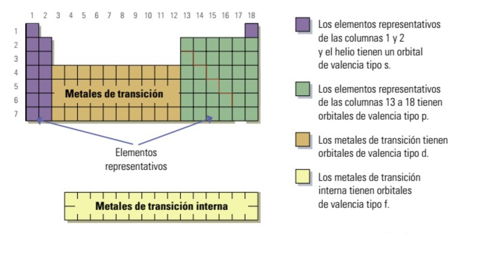

¿Hay alguna relación?
Si no ves el vídeo, pincha aquí
Si no ves el vídeo, pincha aquí
En la tabla periódica, los elementos se colocan de izquierda a derecha y de arriba a abajo en orden creciente respecto a su número atómico (Z). Es decir, la posición de cada elemento depende de su número de protones y, por tanto, también de su número de electrones.
Por esta razón, es precisamente la configuración electrónica de cada elemento la que determina su comportamiento y sus propiedades químicas.
...
Es muy útil utilizar la siguiente tabla periódica clasificada por bloques. Esta tabla nos indica cuáles son los últimos orbitales ocupados por los electrones.

En resumen, conociendo la configuración electrónica de un elemento sabremos el período y el grupo en el que se encuentra. O viceversa, sabiendo el lugar en el que se encuentra un elemento podremos conocer su configuración electrónica. Veamos algunos ejemplos.
Un elemento neutro (no cargado) tiene por configuración electrónica 1s2 2s2 2p6 3s2 3p6 4s1. Nos interesa solo su configuración de valencia, es decir, la última capa que esté incompleta o bien, si es necesario, la incompleta aunque no sea la última. En este caso, 4s1 , el 4 nos indica que estamos en el cuarto periodo, y el 1 del orbital s que estamos en el grupo 1 de la tabla periódica, ya que se cirresponde con el bloque s (en morado en la tabla superior). Es fácil comprobar que se trata del potasio.
Veamos un segundo ejemplo; 1s2 2s2 2p6 3s2 3p6 4s1 3d10 4p3, En este caso la capa que nos interesa es 4p3. De nuevo estamos en el cuarto periodo, y es el tercer (3) elemento del bloque p (en verde en la tabla superior), es decir, se trata del arsénico.
La configuración electrónica del estroncio es: como está en el quinto periodo y es el segundo elemento del bloque s: 5s2, ahora bastaría ir rellenado los niveles hasta llegar al 5s2 usando el diagrama de Möeller.
Obra publicada con Licencia Creative Commons Reconocimiento Compartir igual 4.0